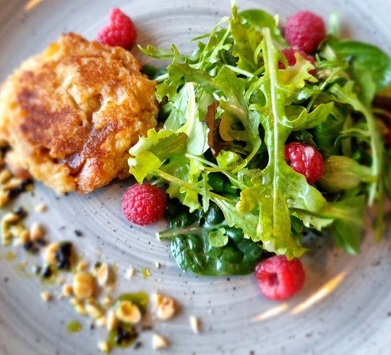

Home
Salmon Cakes

Photo by Ivan Dražić: https://www.pexels.com/photo/meat-with-leaves-and-raspberries-16645587/
Description
Well-seasoned, pan-fried until crispy, flaky salmon inside, and unimaginably delicious!
These salmon cakes take less than 31 minutes to hit the table and pare nicely with a salad.
Healthy and low-effort cooking for the busy human professional person (this sentence was not written by AI).
Ingredients (8 servings)
- 2 (14.75 oz) cans salmon, drained and flaked
- 3/4 cup italian-seasoned panko bread crumbs
- 1/2 cup minced fresh parsley
- 2 large eggs, beaten
- 2 green onions, chopped
- 3 tablespoons Worcestershire sauce or to taste
- 3 tablespoons grated parmesan cheese
- 2 tablespoons Dijon mustard or to taste
- 2 tablespoons creamy salad dressing
- 2 teaspoons seafood seasoning (like Old Bay)
- 1 1/2 teaspoons garlic powder or to taste
- 1 1/2 teaspoons ground black pepper or to taste
- 1 tablespoon olive oil, divided
Directions
- Gather all the ingredients.
- Mix everything except for oil in a large bowl.
- Divide mixture and shape into 8 equal sized patties.
- Heat enough oil in a large skillet to cover the pan over medium heat.
Fry patties until browned, about 5 to 7 minutes per side.
Repeat with more oil as needed.
- Serve with slices of lemon, tarter sauce, and a fresh garden salad.